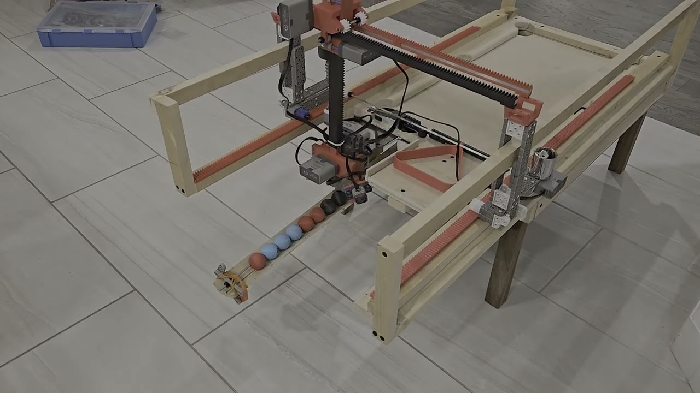
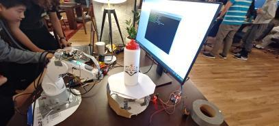

Featured · Video
Bttrpie
An autonomous mini pool table that collects and sorts balls using a 3-axis gantry and a custom grabber claw.
See more
An autonomous mini pool table that collects and sorts balls using a 3-axis gantry and a custom grabber claw.
See more
Bttrpie is an autonomous mini pool table designed to automatically collect and sort modified pool balls using a 3-axis gantry and a custom grabber claw. My team and I designed the entire mechanical system in SolidWorks, validated the design using motion and structural simulations, and fully assembled the robot by hand in the E5 woodshop at the University of Waterloo. See the video above (recommended at 2× speed) to watch the system operate end-to-end.
The robot begins each run by calibrating itself, allowing the user to place it anywhere on the playing surface without manual alignment. Once calibrated, the system establishes its position in three-dimensional space and infers the locations of all other key features on the table. From this point onward, the robot operates completely blind, tracking its position by converting motor encoder rotations into linear translation through a rack-and-pinion gantry mechanism.
The 3-axis gantry enables motion in the X, Y, and Z directions using three independently driven rack-and-pinion stages, each powered by a dedicated motor. Rotation of each motor is converted directly into linear motion of the carriage through a fixed gear rack. Motor encoder feedback is used to track position, while a PID controller regulates motor speed to ensure smooth motion and accurate stopping at target locations.
When the robot reaches the ball collection chute, it identifies each ball using a color sensor mounted beneath the grabber claw. The robot records the position and color of each ball, then executes a simple sorting routine to determine the placement order. Once sorted, the gantry sequentially retrieves each ball and places it in the desired configuration.
Once sorted, the balls are placed one by one into the triangular rack. Due to time constraints, the triangle’s position was not fully constrained in the robot’s coordinate system, occasionally requiring minor manual intervention, as seen in the video. After placement, the triangle is reset, and the table is ready for the next round of play.
WWLetters is a website that parses the University of Waterloo's job aggregation page, WaterlooWorks, into clean, readable, and blessfully dark cards. This project was built out of desperation after reading what felt like a thousand job descriptions on WaterlooWorks' blinding white and tiny UI. Paste a posting anywhere on the page and a custom noise-stripping tokeniser extracts the job title, company, responsibilities, requirements, compensation, and application documents. no AI, just regex and section-header matching against WaterlooWorks' fixed layout. See the demo above.
VtaR is a VR guitar (hence VtaR) experience built for the Oculus Quest 3 that lets you shred like my good friend Ezra Ornstein without the years of practice. See the video above for this little project, and turn your audio on!
The entire project was built in Unity using the XR Interaction Toolkit to handle all of the VR interaction logic. The hand animations were done using the built in animator in Unity, and the 3D assets were all made in blender or found online.
Asset Credits: Cartoon Guitar by Denis Temirgalin, licensed under CC Attribution. Stylized Mangrove Greenhouse by Bársh, licensed under CC Attribution.
Warpz is an automated 3D model generation system that transforms a series of photographs into detailed three-dimensional meshes using photogrammetry. This project was made for a local robotics competition in waterloo, where we won first place. The system integrated Meshroom, an open-source photogrammetry software built on the AliceVision framework, with custom hardware automation to create a hands-off solution for 3D scanning. Users simply place an object on the turntable, and the system handles the entire capture and processing pipeline. See the only surviving image of the project above.
The hardware system consisted of two primary components: a robotic arm that maintains consistent camera positioning and orientation, and a motorized rotating platform that turns the object being scanned. This automated setup ensured repeatable camera angles around the subject. The robotic arm kept the camera level throughout the capture sequence, eliminating the manual effort typically required in photogrammetry workflows.
The rotation mechanism divided a full 360-degree revolution into predetermined intervals, capturing 50 photographs as the turntable completes its rotation. The coverage formed by these successive images was required for Meshroom's structure-from-motion algorithms to successfully reconstruct the geometry. Once image capture completed, the photographs are automatically fed into Meshroom's processing pipeline on a sepearte server, fed information via python websockets, which extracts features, matches them across views, and generates the final textured 3D model.
The project includes both hardware control software running on a Raspberry Pi to coordinate the robotic arm and turntable, and a web interface built with React and TypeScript that allows users to monitor capture progress and download completed models.
ARmatica is an augmented reality app built in Unity that assists during circuit assembly by overlaying a 3D model of a circuit schematic directly onto a physical breadboard. This project was built for Jamhacks, a local 36 hour hackathon, and won third place. See the video attached above for a video of the prototype working. You can also explore the rather delirious github page, where you can track the groups collective sanity levels via the names of the commits.
The AR experience is powered by a lightweight tracking module that continuously monitors the breadboard's position and orientation, enabling stable overlay registration even as users move around their workspace. The system uses a predetermined tracking marker, in this case a QR code positioned adjacent to the breadboard, which the device camera detects and uses as a spatial reference point. Once the marker is identified, ARmatica establishes the breadboard's location and orientation in three-dimensional space, allowing the virtual circuit model to be accurately overlaid onto the physical surface.
Due to the nature of making a hackathon project, ARmatica's user workflow is quite convoluted. The workflow begins with the user making a KiCAD file, and exporting it as a STEP file. The user then uploads it to a website, which then uses a flask backend to process it through FreeCAD to generate a glTF file. It then continues to refine the model and add additional information using Blender's CLI tool, and finally exports it as an FBX file which can be used in Unity. This multi-stage conversion is entirely necessary, and we had to fight several different softwares into agreeing to be used like this.
Omnivim was a project designed to extend the hyper-efficient Vim text editing motions to the entire computer, eliminating the need for a mouse. It achieves this using several Python libraries and keylogging, emulating Normal, Insert, and Visual modes system-wide. Additionally, a "Mouse" mode allows access to functionality that is typically mouse-exclusive, by controlling the mouse via more keyboard controls.
I personally use Omnivim all the time as it makes my day-to-day workflow much more efficient. The app includes a helpful tray icon to indicate the current mode, since keybindings perform different actions depending on the mode. See the video above for a short example on how the software works.
3D-Snake is a physical implementation of the classic snake game, rendered on a 5×5×5 LED matrix cube controlled by an Arduino Mega. The project presents several unique engineering challenges: creating intuitive six-degree-of-freedom control in three-dimensional space, managing the 125 individual LEDs required for the matrix display, and operating within the memory constraints of embedded hardware (less then 1kb of ram!). A video demonstration of the project is available above.
The control scheme uses a WASD+EQ input mapping, where WASD handles horizontal plane movement while E and Q enable vertical navigation through the cube's layers. Player inputs are transmitted to the Arduino via UDP packets, ensuring low-latency communication between the control interface and the physical display. To address the Arduino Mega's limited 4KB RAM, game logic and state management are distributed across multiple microcontrollers, with one Arduino dedicated to LED matrix control while another handles gameplay processing.
The LED matrix employs a multiplexed coordinate system that significantly reduces wiring complexity. Twenty-five vertical cathode lines are soldered together, passing through all five horizontal layers of the cube. Each of the five 5×5 planes has its own common anode connection. To illuminate a specific LED, the system activates one vertical line and one horizontal plane simultaneously, which effectively creates a 3D coordinate system where any position can be addressed using just 30 control pins (25 columns + 5 rows) rather than the 125 individual connections that would otherwise be required.
The Arduino rapidly cycles through each plane in sequence, activating only the LEDs needed for that layer before moving to the next. This technique leverages the human eye's persistence of vision to create the illusion of a fully lit three-dimensional display, but in reality, if you slow down the footage (or if the Arduino lags) you can see that only one LED is on at a time.